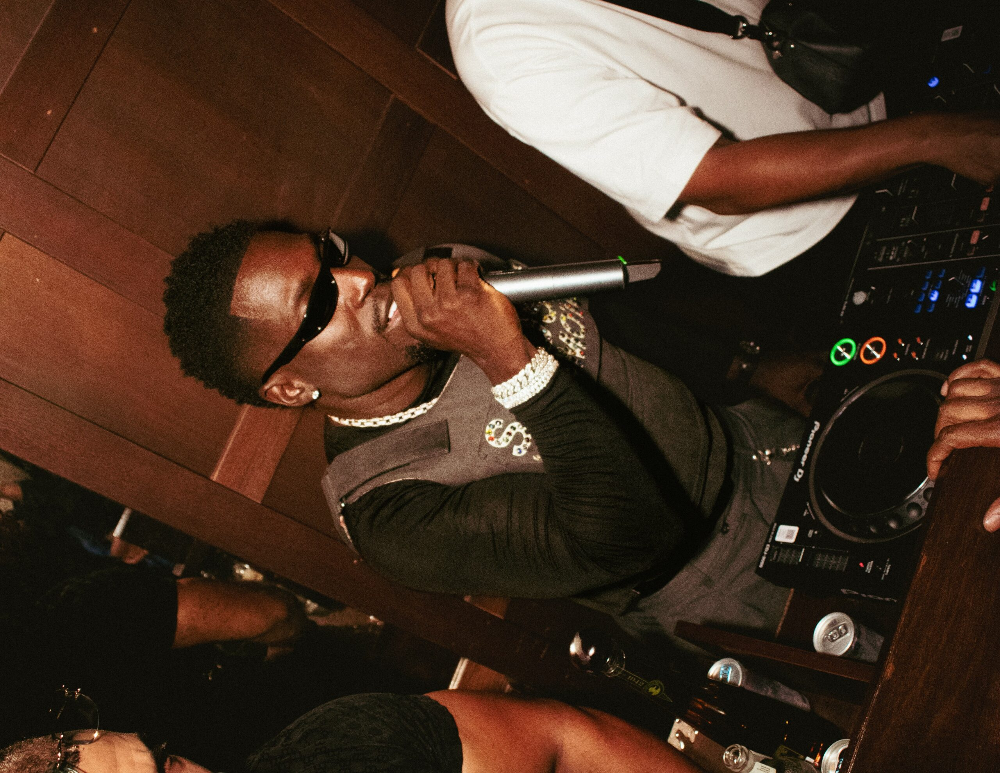

Frenna is een Nederlandse rapper, zanger en songwriter die een grote rol speelt in de Nederlandse muziekwereld.
Hij werd geboren op 17 november 1991 in Den Haag en groeide op in een omgeving waar muziek en straatcultuur veel invloed hadden.
Al op jonge leeftijd raakte hij geïnteresseerd in rappen en het schrijven van teksten. Hij gebruikte muziek als manier om zijn leven en gevoelens te uiten.
Zijn carrière begon echt te groeien toen hij samen met vrienden de rapgroep SFB (Strictly Family Business) oprichtte.
Met deze groep kreeg hij snel bekendheid in Nederland. SFB stond bekend om hun unieke sound, sterke beats en energieke stijl.
Ze brachten meerdere succesvolle nummers uit en werden populair onder jongeren. Dit was het begin van zijn grote carrière.
Na het succes met SFB besloot Frenna solo verder te gaan. Dit werd een groot succes en zijn naam werd nog bekender.
Hij bracht meerdere hits uit die hoog in de hitlijsten stonden en miljoenen streams kregen. Zijn muziek werd steeds groter,
niet alleen in Nederland maar ook internationaal begon hij aandacht te krijgen.
Frenna staat bekend om zijn veelzijdige stijl. Hij combineert rap, zang en melodie in zijn muziek.
Zijn teksten gaan vaak over zijn leven, succes, liefde, moeilijke momenten en persoonlijke groei.
Hierdoor kunnen veel mensen zich herkennen in zijn muziek. Dat maakt hem populair bij een groot publiek.
Ook op het podium is Frenna sterk. Tijdens festivals en concerten weet hij altijd een goede sfeer te maken.
Hij betrekt het publiek bij zijn shows en zorgt ervoor dat iedereen meedoet. Zijn optredens zitten vol energie,
waardoor hij een veelgevraagde artiest is op grote festivals.
Vandaag de dag is Frenna een van de grootste namen in de Nederlandse hiphop en R&B scene.
Hij blijft nieuwe muziek maken, samenwerken met andere artiesten en optreden op grote podia.
Zijn verhaal laat zien dat je met hard werken en talent heel ver kunt komen in de muziekwereld.